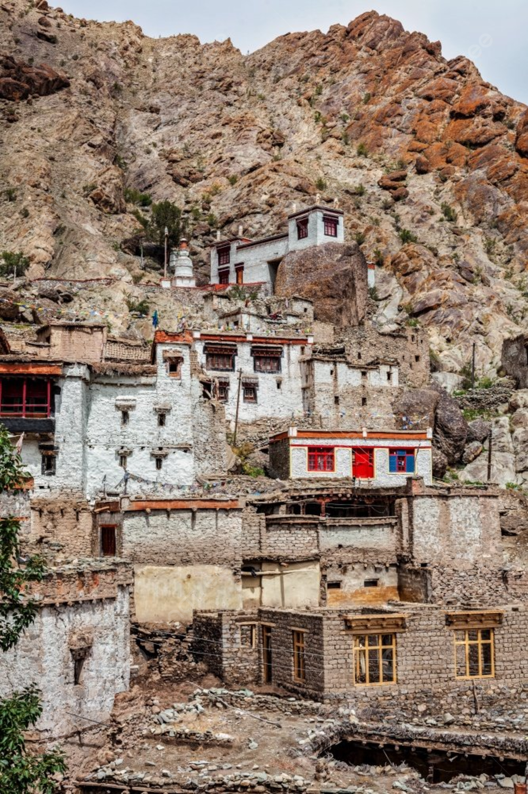

Custom
藏人婚姻製度中一般都是老大當家，其餘無論男女都要出嫁或上門。
沒有”男大當婚、女大當嫁”之風俗。這種婚姻製度表現於男女平等，
生男生女同樣傳家繼業。
歷史上西藏流行土葬，但從佛教傳入西藏後，西藏的葬俗就發生了變化，
其中最流行的所謂天葬（鳥葬）就是佛教思想影響下產生的葬俗，
其涵義是將自己的屍體施舍給動物。
飲食
藏族食品花樣豐富，各地方有許多飲食特點，尤其是貴族階層，
特別講究餐具和飲食品種花樣，就整個西藏的主食來講，有糌粑、
麥子、青稞、肉、酥油、酒、茶、奶品、蜜蜂糖、人生果和瓜菜等。

建築
藏族住房，根據各地的自然條件、地形氣候、建築用料、經濟財力、
社會地位等種種因素，決定著各地住房具有不同的種類。建築類型差異也很大。
總結起來有帳篷、平房、二層平房、樓房、碉房、寺院、別墅和莊房等八大種類。
高原之舟
對生活在青藏高原的中國藏族而言，犛牛不只是藏民生活上的夥伴，
更是一種精神象徵，牠被稱作「藏原的守護生命之神」。
宗教
藏傳佛教是從公元七世紀開始傳播於喜馬拉雅山區和中亞地區的佛教傳承之一。
藏傳佛教包含著極為豐富的內容，從世界上最完備的顯、密宗典籍到無數高僧大德的論述著作。
歷史上，信仰藏傳佛教的主要是西藏人和蒙古人，但從本世紀開始，
特別是自五十年代末大量西藏人被迫流亡世界各地以來，藏傳佛教也隨著傳入世界各地，
並正成為一個跨越國家、民族的世界性宗教。
賽馬節
它每年不只賽一次，而是三次。每年春播前夕，各鄉各村都要舉辦一次跑馬比賽，
藏語稱作“加央”，這是為鼓舞士氣，順利播種；春播後，又舉辦一次賽馬，
稱作“烏央”，是祈禱風調雨順，預祝豐收的；秋收以後，舉辦一次規模更大的賽馬活動，
稱作“實央”，老百姓們家家戶戶披紅戴彩，慶賀豐收。